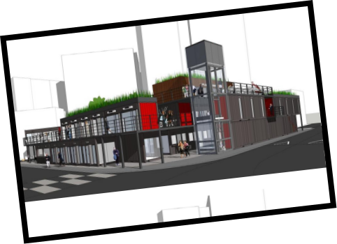

이대 상권의 어제와 오늘
1980년대부터 현재까지 이대 상권의 변화
그 시절 멋쟁이들은
이대 앞으로 모였다


1. 1960년 이화양장 (출저 : 서울역사박물관)
2. 1970년 이대 앞 골목 (출저 : 이화역사관)
3. 1966년 학생들의 모습 (출저 : 이대학보)
2. 1970년 이대 앞 골목 (출저 : 이화역사관)
3. 1966년 학생들의 모습 (출저 : 이대학보)
세상에 하나뿐인 옷
기성복이 흔치 않았던 시절, 직접 원단과 디자인을 선택해
‘세상에서 하나밖에 없는 내 옷’을 가지려는 당대의 멋쟁이들이
모두 이대 앞 양장점으로 몰렸다.
‘세상에서 하나밖에 없는 내 옷’을 가지려는 당대의 멋쟁이들이
모두 이대 앞 양장점으로 몰렸다.
“그때 멋쟁이들은 이대 앞에 와서
양장점 같은 곳에서 옷을 맞췄어요.” (이윤희 교수)
양장점 같은 곳에서 옷을 맞췄어요.” (이윤희 교수)
미용실 BOOM!
세상의 가장 예쁜 것들은 다 이대 앞에 있었다.
잡지사나 방송국에서도 멋쟁이들의 사진을 찍거나
길거리 캐스팅을 위해 몰려들었다.
멋쟁이들은 모두 이대 앞으로 온다는 인식 때문에
많은 미용실이 생겼다.
잡지사나 방송국에서도 멋쟁이들의 사진을 찍거나
길거리 캐스팅을 위해 몰려들었다.
멋쟁이들은 모두 이대 앞으로 온다는 인식 때문에
많은 미용실이 생겼다.
“옛날에는 외부 사람들도 시간을 내서 이대까지 와서
「은하 미용실」처럼 유명한 미용실에 많이 갔어요.
요즘에는 유명한 미용실들이 강남으로 많이 넘어가서
많이 없어졌어요.” (이윤희 교수)
「은하 미용실」처럼 유명한 미용실에 많이 갔어요.
요즘에는 유명한 미용실들이 강남으로 많이 넘어가서
많이 없어졌어요.” (이윤희 교수)


1. 1983년 은하 미용실 앞
2, 3. 1983년 김연우 미용실 앞
2, 3. 1983년 김연우 미용실 앞


1. 2000년대 보세의류거리 (출저 : TN 뉴스)
2. 2000년대 중남미옷을 파는 가게 (출저 : TN 뉴스)
3. 2000년대 교복을 입고 쇼핑하는 학생들 (출저 : TN 뉴스)
2. 2000년대 중남미옷을 파는 가게 (출저 : TN 뉴스)
3. 2000년대 교복을 입고 쇼핑하는 학생들 (출저 : TN 뉴스)
중심이 되다
지하철 2호선 이대역이 개통되고 여대생 뿐만 아니라
직장인과 중고등학생도 이대 상권으로 모였다.
저가부터 고가까지 선택의 폭이 다양했고,
옷가게 뿐만 아니라 가죽공방, 악세사리 등
재미있는 가게가 많았다.
그 당시 이대는 젊은 여성들의 패션의 중심지였다.
직장인과 중고등학생도 이대 상권으로 모였다.
저가부터 고가까지 선택의 폭이 다양했고,
옷가게 뿐만 아니라 가죽공방, 악세사리 등
재미있는 가게가 많았다.
그 당시 이대는 젊은 여성들의 패션의 중심지였다.
“90년대까지 패션의 첨단이었던 곳이라서
인디 디자이너들의 옷을 구매하는 것이 매력있었어요.
2000년대 초까지 미국에서 들어왔을 때
이대 상권에서 옷을 구매했어요.” (손아정 교수)
인디 디자이너들의 옷을 구매하는 것이 매력있었어요.
2000년대 초까지 미국에서 들어왔을 때
이대 상권에서 옷을 구매했어요.” (손아정 교수)
저무는 상권
외국인 관광객을 타겟으로 화장품 가게가 증가하는 등
상업화가 가속화됐다. 특색이 없어지자 상권이 무너지고
멋쟁이들은 이대를 찾지 않게 되었다.
상업화가 가속화됐다. 특색이 없어지자 상권이 무너지고
멋쟁이들은 이대를 찾지 않게 되었다.
“중국 관광객들에게 타겟을 맞추어 변해버린 느낌이에요.
상업화되어 저렴하게 느껴지는 공간이 많아
사람들이 찾지 않게 되자 상권이 무너지는 결과를 낳은 것 같아요.”
(차지은 교수)
상업화되어 저렴하게 느껴지는 공간이 많아
사람들이 찾지 않게 되자 상권이 무너지는 결과를 낳은 것 같아요.”
(차지은 교수)


포장마차들은 다
어디로 갔을까

1.
2. 2015년 이화여대길 노점
(중앙일보)
2. 2015년 이화여대길 노점
(중앙일보)
포장마차 등장
1980년대부터 이대 정문에 포장마차들이 생겼다.
포장마차는 서서 먹어야 하는 불편함도 있었지만
먹는 시간을 절약할 수 있고 가격이 저렴하며
기호에 따라 골라먹을 수 있어서 인기만점이었다.
포장마차는 서서 먹어야 하는 불편함도 있었지만
먹는 시간을 절약할 수 있고 가격이 저렴하며
기호에 따라 골라먹을 수 있어서 인기만점이었다.
“학력고사 예비소집일에 전주에서 이대를 처음 왔는데
지하철역에서 내리자마자 포장마차가 많아서 놀랐어요.
먹거리보다는 악세사리류가 많았어요.”(이윤희 교수)
지하철역에서 내리자마자 포장마차가 많아서 놀랐어요.
먹거리보다는 악세사리류가 많았어요.”(이윤희 교수)
인기 메뉴
“오전에는 토스트 집, 오후에는 계란빵,
밤에는 떡볶이가 학생들에게 가장 인기있었어요.
그리고 칵테일을 파는 포장마차도 잠깐 있었어요.”
(박지현 교수)
밤에는 떡볶이가 학생들에게 가장 인기있었어요.
그리고 칵테일을 파는 포장마차도 잠깐 있었어요.”
(박지현 교수)
“깻잎떡볶이를 사서 야근할 때 많이 먹었어요.”
(이윤희 교수)
(이윤희 교수)
“학생들에게 가장 인기가 좋았던 곳은 닭꼬치였고
저도 가장 자주 이용했어요.” (차지은 교수)
저도 가장 자주 이용했어요.” (차지은 교수)


1. 2010년대 닭꼬치 포장마차 (출저 : 현대)
2. 2010년대 닭꼬치 포장마차의 닭꼬치 (출저 : 현대)
3. 2010년대 깻잎 떡볶이 포장마차 (출저 : 현대)
4. 2010년대 깻잎 떡볶이 포장마차의 떡볶이 (출저 : 현대)
2. 2010년대 닭꼬치 포장마차의 닭꼬치 (출저 : 현대)
3. 2010년대 깻잎 떡볶이 포장마차 (출저 : 현대)
4. 2010년대 깻잎 떡볶이 포장마차의 떡볶이 (출저 : 현대)


1. 2014년 이화여대길 쓰레기 (1)
(출저 : 이대학보)
2. LPG 가스통 (출저 : 박스퀘어 홈페이지)
3. 2014년 이화여대길 쓰레기 (2)
(출저 : 이대학보)
(출저 : 이대학보)
2. LPG 가스통 (출저 : 박스퀘어 홈페이지)
3. 2014년 이화여대길 쓰레기 (2)
(출저 : 이대학보)
문제점 대두
학교는 통학로 확보, 주민들은 도심 정비를 이유로
끊임없이 민원을 제기했다. 문제는 그 뿐만이 아니었다.
음식 조리에 따른 위생을 보장하기 어려주며
LPG 가스통은 실로 위험했다.
불법 노점상이지만 그렇다고 오랜 역사를 가진 포장마차를
쉽게 철거할 수는 없었다.
끊임없이 민원을 제기했다. 문제는 그 뿐만이 아니었다.
음식 조리에 따른 위생을 보장하기 어려주며
LPG 가스통은 실로 위험했다.
불법 노점상이지만 그렇다고 오랜 역사를 가진 포장마차를
쉽게 철거할 수는 없었다.
박스퀘어 설립
서대문구는 예산을 편성하여
노점상을 위한 공간을 만들기로 했다.
신촌 기차역 앞 쉼터였던 공간을
노점상들이 영업할 수 있는 공간으로 만들고
모두 입점할 수 있도록 돕는 것이다.
노점상을 위한 공간을 만들기로 했다.
신촌 기차역 앞 쉼터였던 공간을
노점상들이 영업할 수 있는 공간으로 만들고
모두 입점할 수 있도록 돕는 것이다.



1. 박스퀘어 공사 중 사진 (출저 : 박스퀘어 홈페이지)
2. 박스퀘어 예상도 (출저 : 박스퀘어 홈페이지)
3. 박스퀘어 야경 (출저 : 박스퀘어 홈페이지)
2. 박스퀘어 예상도 (출저 : 박스퀘어 홈페이지)
3. 박스퀘어 야경 (출저 : 박스퀘어 홈페이지)
카페를 가는 목적이
변하다

1. 2000년대 보세의류거리 (출저 : TN 뉴스)
2. 2000년대 중남미옷을 파는 가게 (출저 : TN 뉴스)
3. 2000년대 교복을 입고 쇼핑하는 학생들 (출저 : TN 뉴스)
2. 2000년대 중남미옷을 파는 가게 (출저 : TN 뉴스)
3. 2000년대 교복을 입고 쇼핑하는 학생들 (출저 : TN 뉴스)
학생운동의 근거지
학교 근처 카페는 학생 운동을 주도하던 학생들의
동아리방을 대신했다.
특히 이대 앞 카페는 이대 학생들이
여성운동을 이끌어 나갈 때 토론의 장이 됐다.
동아리방을 대신했다.
특히 이대 앞 카페는 이대 학생들이
여성운동을 이끌어 나갈 때 토론의 장이 됐다.
게시판
1980년대까지는 삐삐가 대중화되기 전이었다.
연락 수단이 귀했던 때 학교 근처 명소는 게시판 역할을 했다.
요즘으로 치면 SNS의 아날로그 버전인 셈이다.
연락 수단이 귀했던 때 학교 근처 명소는 게시판 역할을 했다.
요즘으로 치면 SNS의 아날로그 버전인 셈이다.
“그때는 카페라는 개념이 없었어요.
삐삐가 나오기 전 「그린하우스」 옆에 메모판이 있었는데,
타 대학 친구들이 오면 내가 어디에 있다는 걸
그 메모판에 적어놨었어요.”(이윤희 교수)
삐삐가 나오기 전 「그린하우스」 옆에 메모판이 있었는데,
타 대학 친구들이 오면 내가 어디에 있다는 걸
그 메모판에 적어놨었어요.”(이윤희 교수)


1971년 그린하우스 앞 (출저 : 디지털 도서관 ‘셀수스’)